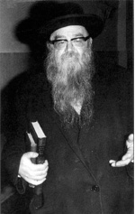

What Is Your Reality?
A lecture from the Maggid of Yerushalayim, Rabbi Sholom Schwadron (1912-1997) a”h about the statement of Chazal which says, “Yaakov Avinu did not die” and the difficulty people have accepting this literally. * What did the Rambam tell people who had doubts in emuna and what connection is there to what Rav Yochanan said, in his proof to Vespasian? * Word for word from the book, “L’Haggid.” * Presented for Gimmel Tammuz
[Rav Yitzchak] told him: “I derive this homiletically from a verse. It is written: ‘Do not fear, My servant Yaakov, speaks G-d, and do not dismay, O Israel. For I will deliver you from afar, and your descendants from the land of their captivity.’ A parallel is drawn between him [Yaakov] and his descendants. Just as his descendants are alive, he too is alive” (Taanis 5b). “Yaakov Avinu did not die – but lives forever. This that they embalmed him is because they thought that he had died. It appeared to them that he had died, but he was alive.”(Rashi)
“WHAT DOES THAT MEAN? A PERSON DOESN’T DIE?”
I think I will touch upon a number of points that may not have any connection, but in any case, it is worthwhile. We will spend a short time on each point.
The Gemara in Taanis daf 5b says: Rav Nachman and Rav Yitzchok were sitting at a meal when Rav Nachman asked Rav Yitzchok to tell him a d’var Torah. He said to him: Rav Yochanan said that we do not talk while eating, lest the windpipe precede the esophagus which is dangerous. Only after the meal will I tell you something.
After the meal he said to him: Rav Yochanan said, Yaakov Avinu did not die.
[Rav Nachman] said to him: Was it for naught that they eulogized him and embalmed him and buried him?
[Rav Yitzchok] said to him: I derive this homiletically from a verse. It is written: “Do not fear, My servant Yaakov, speaks G-d, and do not dismay, O Israel. For I will deliver you from afar, and your descendants from the land of their captivity.” A parallel is drawn between him [Yaakov] and his descendants. Just as his descendants are alive, he too is alive.” Rashi explains, “Yaakov Avinu did not die – but lives forever. This that they embalmed him is because they thought that he had died. It appeared to them that he had died, but he was alive.”
It’s an interesting thing that people, especially young ones, say, “What does this mean? A person doesn’t die?!” It’s not that they don’t believe. “We believe,” they say. “But how can that be?” They want to understand.
There is a letter from the Rambam to a community who asked him about some questions they had in emuna. Instead of answering their questions, the Rambam sent them a response telling them to check the shochet. They checked the local shochet and found that he had lost sensation and could not feel flaws in the sh’chita knife. Consequently, he produced some treifos. The community wrote to the Rambam: Ruach Ha’kodesh appeared in your house of study, our master, our teacher!
The Rambam responded: I am not a prophet nor the son of a prophet, but I saw that you have doubts in emuna and I realized it comes from eating treifos, because it says, “and you will become contaminated with it,” and Chazal say (Yuma 39), “a sin is metamteim a person’s heart,” and Rashi says, “It stops it up, closes it off, from wisdom.” The Gemara brings proof from the verse about eating treifos and swarming creatures, “and do not contaminate yourselves with them. Do not read it contaminated but stopped up.”
Therefore it must be that the stopped up mind and your questions come from eating treifos. How could this happen that you eat treifos, G-d forbid, when you are G-d fearing? I had to say that you did so inadvertently, like through a shochet who was not fit.
Unbelievable!
This is why I say in the drasha that if there are people that have questions in emuna, they should examine what they eat. It sometimes happens, and maybe more than sometimes, that G-d fearing people don’t think. They travel to distant places or are hungry while on the street, and they eat something and they don’t know what they are putting into their bodies. “Yeah, yeah, it’s kosher. There is a hechsher on the package,” they say to themselves and they trip up. This is how they become stopped up, “contaminated.”
I heard in the name of a gadol who gave an analogy: if someone was told that poison was concealed in the fruit on the table, would he eat it? Even if only a small child told him about the slight possibility of there being poison in the fruit, he would keep his distance. So why put food into your mouth whose hechsher may not be good? Because we do not feel it is poison!
YOU ARE TOLD, “YAAKOV AVINU DID NOT DIE” AND YOU STAMMER, YES, BUT …
On this topic of Yaakov Avinu did not die:
There is a dispute among the Rishonim about how to interpret it. In the Maharsha there is another explanation, but Rashi and Tos’fos explain it literally, that Yaakov Avinu did not die, that he lives forever. Additionally, Tosafos points out that it does not say “and Yaakov died” in the Torah, but “he expired,” and brings a proof from the story of Chushim the son of Dan in the Gemara Sota where it says that Yaakov Avinu opened his eyes and smiled. So he was alive.
The Gemara says in Sanhedrin, “in the future, trees in Eretz Yisroel will produce bread rolls and silk garments.” It is saying that in the Future Time, the trees of Eretz Yisroel will sprout bread rolls, pastries and clothing.
The Rambam maintains that the Gemara is speaking allegorically, namely that it will be so good and pleasant and so serene that, as it were, all will grow entirely on the tree. The Rambam expounds from verses that this is what is meant.
But someone who thinks that it can’t be the simple, literal meaning – that clothing will grow on trees, is one of those who has become “stuffed up.”
Why? Because if I ask you, how do bananas grow on a tree, do you know? A genius like you has figured out that bananas can grow but cakes cannot? How do bananas sprout altogether? The answer is, Hashem created it this way, that trees produce bananas and just as He created it this way for now, He will create it differently later on. It is all wonder of wonders, as He wishes.
You are told, “Yaakov Avinu did not die,” and you stammer and say, “Yes, but …” What’s the but? How a person lives is something you do know? How he takes bread, puts it in his mouth, it goes in here (pointing at the mouth) and then all sorts of waste exit the body and inside he retains the minerals etc. and he lives! How? It’s because Hashem created him that way, so what difference does it make? When you live routinely, there is no wisdom and no understanding!
That is one point I wanted to talk about.
RAV YOCHANAN TELLS VESPASIAN – I HAVE A PASUK
The Gemara says that when R’ Yochanan ben Zakai spoke to General Vespasian in the days preceding the churban, he said, “Shalom to you the emperor, shalom to you the emperor.”
Vespasian was angered by this and said: You deserve double capital punishment. First, I am not the emperor, and second, if I am the emperor, why didn’t you come to me until now?
“You are the emperor,” said R’ Yochanan.
What happened? How does he know this? “I derive this homiletically from a verse.” I have a homiletic source that the Beis HaMikdash will fall into the hands of an emperor, as it says, ‘and the Levanon will fall to the mighty,’ and ‘might’ refers to an emperor.
Now look. R’ Yochanan ben Zakai was representing all the Jewish people, and he knew that he could be sentenced to the death penalty, but he had a drasha from a pasuk! Unbelievable! It says in a pasuk!
And as they spoke, a messenger came from Rome, someone who had been sent maybe a month earlier, and he announced that the emperor had died and Vespasian was appointed as the new emperor.
Nobody knew because there were no newspapers and it wasn’t written in any newspapers in Eretz Yisroel. But Rabbi Yochanan ben Zakai knew. Let me tell you, that R’ Yochanan knew this is no wonder at all; the Tanaim knew everything. But that R’ Yochanan said this to the emperor based on a pasuk is incredible. And my teacher [R’ Eliyahu Lopian z”l] explained this in the most literal sense.
THERE ARE NO WITNESSES IN THE FACE OF REALITY
My teacher said as follows: if witnesses come before the judges and say that so-and-so died, we believe them because “the matter stands based on two witnesses.” (And in some cases, we even believe one witness.)
If another two witnesses come and testify against them saying he did not die, the din is in doubt, maybe he died and maybe he didn’t die. In this situation, even if hundreds and thousands of witnesses come to bolster either side, the matter remains in doubt.
But if they said so-and-so died and suddenly, he appears at the courtroom door, he is alive even if thousands of witnesses testify that he died; there is no doubt. He is alive. Why? Thousands testify that he died?
Listen closely to a fantastic principle. Witnesses are useful in a matter of doubt; they only clarify a doubtful matter. If two testify that he died, the doubt is resolved, which is why, if two other witnesses testify against them and say he did not die, the doubt returns. But who needs witnesses when facing reality? The reality is he is alive! In such a case, it’s like the witnesses do not exist. They are superfluous.
If witnesses are not needed, they aren’t worth anything, as my teacher said.
Said my teacher: To those people, the world is reality and the Torah is testimony, so when they see that it says in the Gemara, “Yaakov Avinu did not die,” they try to interpret it one way or another. To Chazal, Torah is the reality of the world and the world is testimony, and when it comes to reality, no testimony is needed.
A CHAIN IN THE MUSAR LEGACY OF KELM

R’ Schwadron was considered a chain in the musar legacy of Kelm, Slobodka, and Novardok. Some of the stories he told were incorporated in the “Maggid” series of books by Rabbi Paysach Krohn.
As for his ties with Chabad, all we know is that he had yechidus with the Rebbe on 22 Sivan 5735/1975. When R’ Shlomo Shtentzahl wrote to the Rebbe about a drasha given by R’ Schwadron, the Rebbe’s response was, “In response to your letter … in which you write about the tremendous impact made on the gathering by the speech of so-and-so who inspired people to yiras Shamayim, Torah and mitzvos – fortunate is his lot that he participated in organizing the event …” (Igros Kodesh vol. 12, p. 305)
Beis Moshiach (staff). "What Is Your Reality?." Beis Moshiach, no. 882 (June 6, 2013).